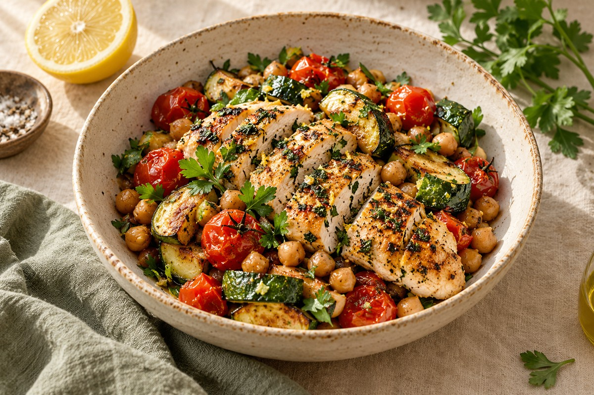

A recipe book
that feels like yours.
Create and edit recipes, keep personal notes, add your own photos, and gather favourites into collections.
Keep the good ones →Your favourite recipes, a thoughtful meal plan, and a shopping list that comes together. Make a little room for the joy of cooking.
Make yourself at home ↗DishNest for Android & Fire tablets · In development

Create and edit recipes, keep personal notes, add your own photos, and gather favourites into collections.
Keep the good ones →Plan breakfast, lunch, dinner and snacks. Reuse a good week or let an offline planner suggest dinners from saved recipes.
Find your rhythm →Bring planned ingredients together, scale servings, deduct compatible pantry quantities, and check off your shop.
Bring it together →Good plans make space for real life. Save a familiar week as a template, swap a dinner, or start fresh.
A gentler way to plan →Take a breath.
Warm the olive oil, add garlic and tomatoes, and let everything simmer gently.
Large steps, spoken instructions, independent timers, and push-to-talk commands when your device supports them. Touch controls are always available.
Cook at your own pace →DishNest is being built as a native Android app with Fire tablets in mind. You can create a local recipe book without registration. Physical Fire-device compatibility testing and Amazon submission are still pending.
Yes. The implemented recipe book, meal plans, shopping list and pantry use local storage. URL imports require internet access. Voice availability and connectivity depend on the installed recognition service.
Yes. The implemented engine scales ingredients by planned servings, sums compatible quantities and deducts compatible pantry quantities. It keeps incompatible units and different ingredient forms separate.
Cooking mode provides text-to-speech and push-to-talk recognition when suitable services are installed. Availability varies on Fire tablets. You can also read steps, move between them and manage timers by touch.
The planner has seven days with breakfast, lunch, dinner and snack slots. You can set meal servings, copy the previous week and reuse saved templates.
A development APK is available in the project deliverables. There is no public Amazon listing yet, and purchases are disabled pending store configuration and verified receipt handling.
Built around the food you love and the life you actually live.
About this development preview →